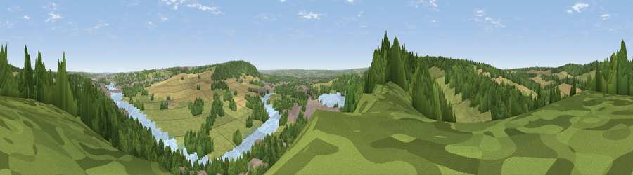

Viewpoint near Cuxton
#29405 in England · top 22% of its area beats it · near Cuxton · footpathWhere it is
The exact computed spot (TQ 70225 66075). Click the marker for map links.
Public access: a public right of way passes within 49 m of this spot. Computed from Natural England's CRoW access layer and OpenStreetMap rights of way — not the legal definitive map. Always verify locally.
The view, rendered

A 360° render of this exact spot computed from the terrain model, tree cover and land cover — summer colours, afternoon light, calibrated against photographs of famous viewpoints. Real trees, hedges and buildings will differ in detail.
The panorama
Grey silhouette: terrain skyline in each direction (720 bearings, Earth curvature and refraction included). Dashed green: skyline with trees (+15 m) and buildings (+8 m) as obstacles. Blue strip: how far the ground is visible on each bearing.
Where the view opens
Wedge length = distance to the farthest visible ground on that bearing (vegetation-aware). Rings at 10, 25 and 50 km.
What fills the view
62% woodland · 17% grassland · 8% cropland · 7% built-up · 7% water
Angular shares of the visible panorama (visual magnitude), not map area. Landscape diversity 0.51 (0–1 Shannon).
Key numbers
More beautiful places nearby
The staircase of upgrades: each row has a higher view potential than everything closer. Driving times are estimates from straight-line distance, calibrated against real road routing — check an actual route before setting out.
| Place | Direction | Drive | Score |
|---|---|---|---|
| Viewpoint near Upper Halling | SW · 3 km | ~7 min | 52.5 |
| Viewpoint near Birling | SW · 5 km | ~11 min | 65.1 |
| Viewpoint near Shipbourne | SW · 19 km | ~32 min | 66.2 |
| Viewpoint near Charing | SE · 29 km | ~46 min | 68.6 |
| Viewpoint near Westwell | SE · 33 km | ~51 min | 72.2 |
| Viewpoint near Lympne | SE · 50 km | ~71 min | 72.6 |
| Tolsford Hill | ESE · 53 km | ~75 min | 77.9 |
| Viewpoint near Fairlight | SSE · 57 km | ~79 min | 79.0 |
51.36822, 0.44402 · source: screening · position refined by local search. Computed location — check access rights before visiting.